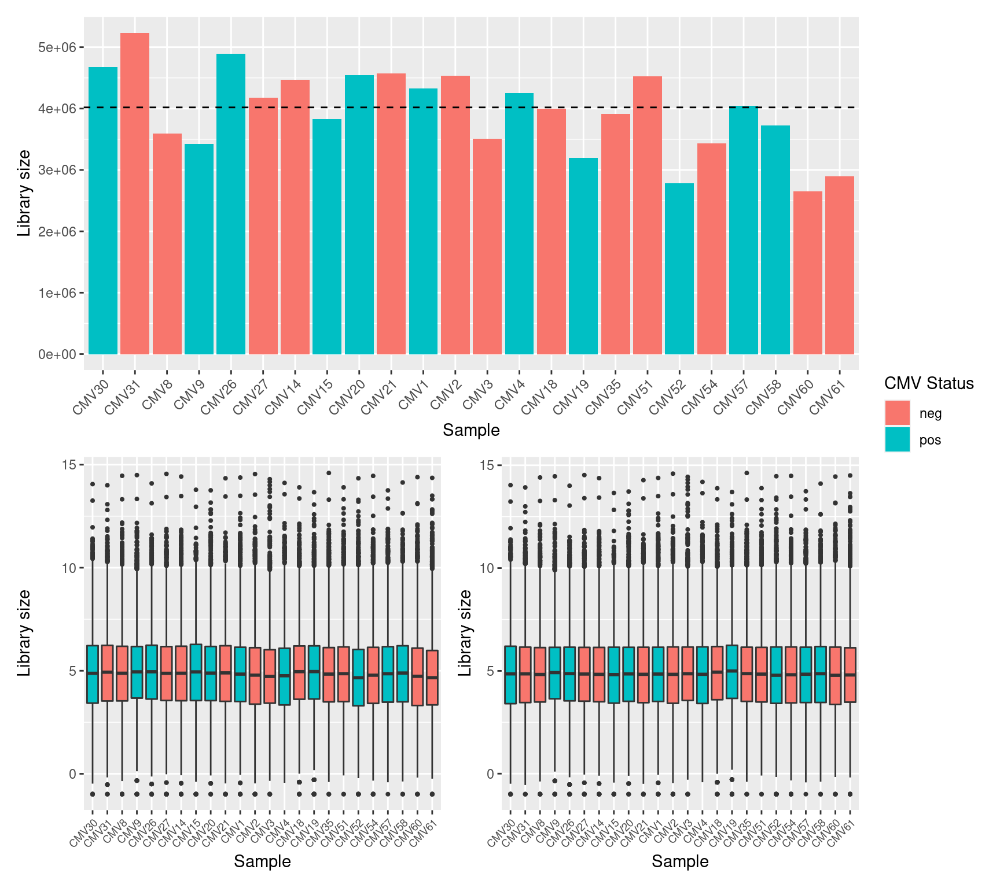
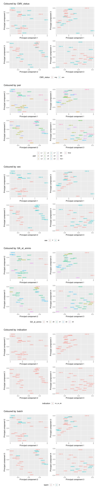
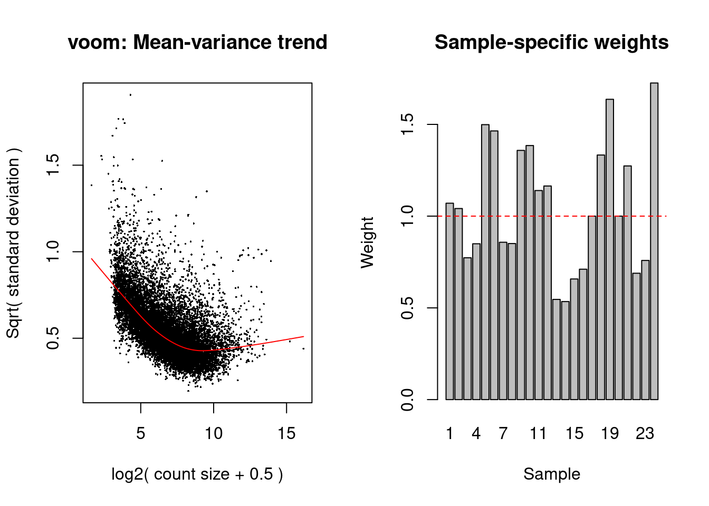
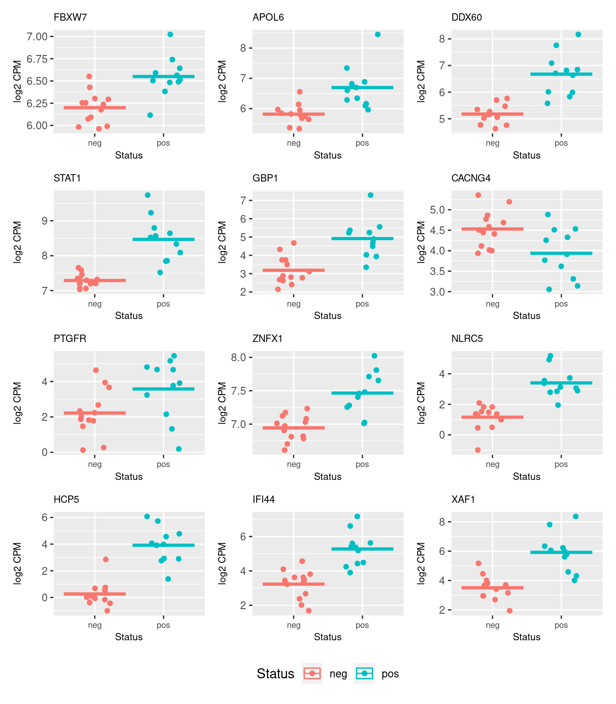
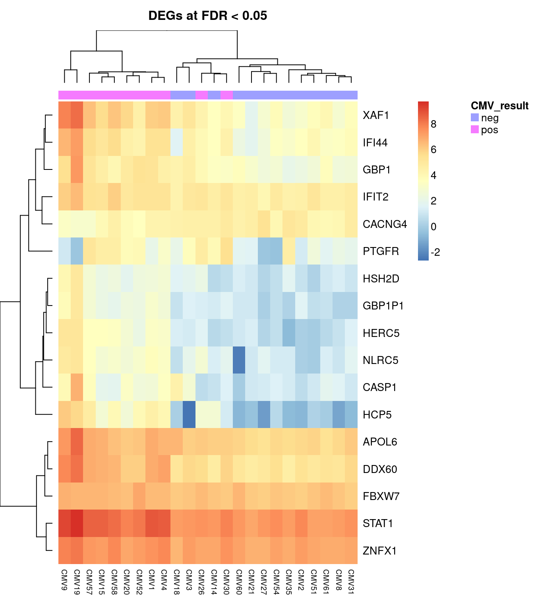
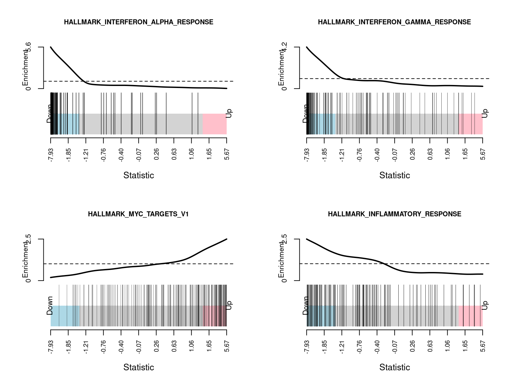
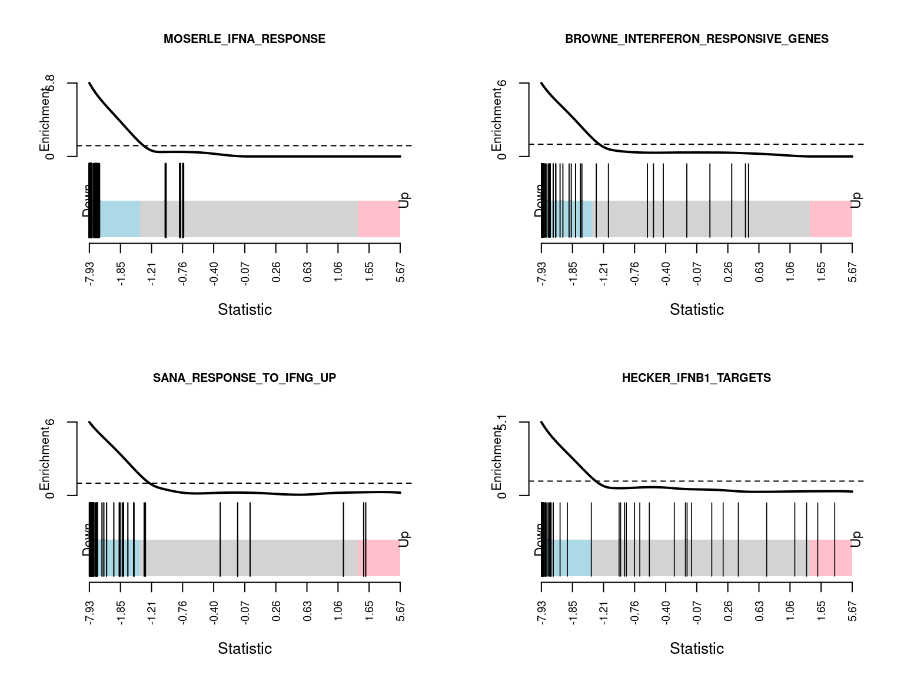
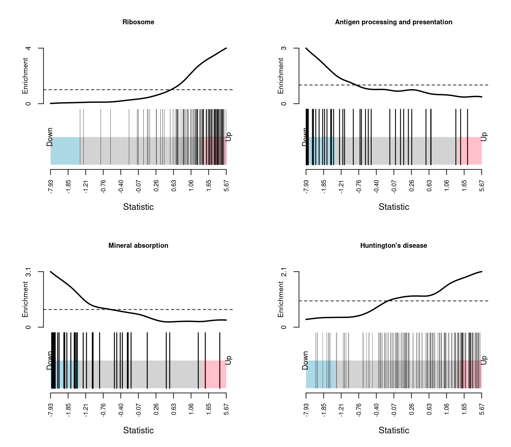
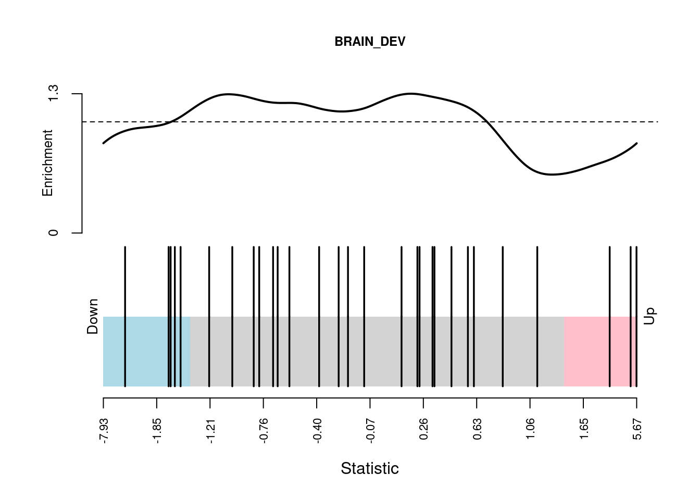

Limma-voom paired analysis EXCLUDING samples with ultrasound abnormality
Last updated: 2020-10-13
Checks: 7 0
Knit directory: amnio-cell-free-RNA/
This reproducible R Markdown analysis was created with workflowr (version 1.6.2). The Checks tab describes the reproducibility checks that were applied when the results were created. The Past versions tab lists the development history.
Great! Since the R Markdown file has been committed to the Git repository, you know the exact version of the code that produced these results.
Great job! The global environment was empty. Objects defined in the global environment can affect the analysis in your R Markdown file in unknown ways. For reproduciblity it’s best to always run the code in an empty environment.
The command set.seed(20200224) was run prior to running the code in the R Markdown file. Setting a seed ensures that any results that rely on randomness, e.g. subsampling or permutations, are reproducible.
Great job! Recording the operating system, R version, and package versions is critical for reproducibility.
Nice! There were no cached chunks for this analysis, so you can be confident that you successfully produced the results during this run.
Great job! Using relative paths to the files within your workflowr project makes it easier to run your code on other machines.
Great! You are using Git for version control. Tracking code development and connecting the code version to the results is critical for reproducibility.
The results in this page were generated with repository version 2ee5593. See the Past versions tab to see a history of the changes made to the R Markdown and HTML files.
Note that you need to be careful to ensure that all relevant files for the analysis have been committed to Git prior to generating the results (you can use wflow_publish or wflow_git_commit). workflowr only checks the R Markdown file, but you know if there are other scripts or data files that it depends on. Below is the status of the Git repository when the results were generated:
Ignored files:
Ignored: .Rhistory
Ignored: .Rproj.user/
Ignored: code/.bpipe/
Ignored: code/.rnaseq-test.groovy.swp
Ignored: code/fastqc/
Ignored: data/.bpipe/
Ignored: data/190717_A00692_0021_AHLLHFDSXX/
Ignored: data/190729_A00692_0022_AHLLHFDSXX/
Ignored: data/190802_A00692_0023_AHLLHFDSXX/
Ignored: data/200612_A00692_0107_AHN3YCDMXX.tar
Ignored: data/200612_A00692_0107_AHN3YCDMXX/
Ignored: data/200626_A00692_0111_AHNJH7DMXX.tar
Ignored: data/200626_A00692_0111_AHNJH7DMXX/
Ignored: data/CMV-AF-database-final-included-samples.csv
Ignored: data/GONE4.10.13.txt
Ignored: data/HK_genes.txt
Ignored: data/IPA molecule summary.xls
Ignored: data/IPA-molecule-summary.csv
Ignored: data/bpipe.config
Ignored: data/brain-development-geneset.txt
Ignored: data/catfastq/
Ignored: data/commandlog.txt
Ignored: data/counts-pe/
Ignored: data/counts-se/
Ignored: data/deduped/
Ignored: data/fastqc/
Ignored: data/joindata.csv
Ignored: data/mapped/
Ignored: data/metadata.csv
Ignored: data/multiqc_data/
Ignored: data/multiqc_report.html
Ignored: data/old/
Ignored: data/samples.csv
Ignored: data/sorted/
Ignored: data/test/
Ignored: data/trimmed/
Ignored: output/c2Ens.RData
Ignored: output/c5Ens.RData
Ignored: output/exclude-CMV11/
Ignored: output/hEns.RData
Ignored: output/keggEns.RData
Ignored: output/salmon-limma-voom-c5Cam.csv
Ignored: output/salmon-limma-voom.Rmd/
Ignored: output/salmon-limma-voom.csv
Ignored: output/salmon-ruvseq-edger.csv
Ignored: output/star-fc-limma-voom-all-gsea-c5.csv
Ignored: output/star-fc-limma-voom-all.csv
Ignored: output/star-fc-limma-voom-no_us_ab-gsea-c5.csv
Ignored: output/star-fc-limma-voom-no_us_ab.csv
Untracked files:
Untracked: analysis/salmon-ruvseq-edger.Rmd
Unstaged changes:
Modified: analysis/salmon-limma-voom-exclude-CMV11.Rmd
Modified: analysis/salmon-limma-voom.Rmd
Note that any generated files, e.g. HTML, png, CSS, etc., are not included in this status report because it is ok for generated content to have uncommitted changes.
These are the previous versions of the repository in which changes were made to the R Markdown (analysis/STAR-FC-exclude-abnormal.Rmd) and HTML (docs/STAR-FC-exclude-abnormal.html) files. If you’ve configured a remote Git repository (see ?wflow_git_remote), click on the hyperlinks in the table below to view the files as they were in that past version.
| File | Version | Author | Date | Message |
|---|---|---|---|---|
| Rmd | 2ee5593 | Jovana Maksimovic | 2020-10-13 | wflow_publish(c(“analysis/index.Rmd”, “analysis/STAR-FC-all.Rmd”, |
Data import
Set up DGElist object for downstream analysis. Sum paired and unpaired counts prior to downstream analysis.
An object of class "DGEList"
$counts
CMV30 CMV31 CMV8 CMV9 CMV26 CMV27 CMV14 CMV15 CMV20 CMV21 CMV1 CMV2 CMV3 CMV4
1 0 0 0 0 2 2 0 1 0 1 1 0 1 0
2 58 95 58 59 113 101 60 48 79 71 54 63 39 46
3 1 0 0 0 0 0 0 0 0 0 0 0 0 0
4 0 0 0 0 0 0 0 0 0 0 1 0 1 0
5 0 0 0 0 0 0 0 0 0 0 0 0 0 0
CMV10 CMV11 CMV18 CMV19 CMV35 Corriel NTC-2 CMV51 CMV52 CMV53 CMV54 CMV56
1 0 0 0 0 1 1 0 0 0 0 0 0
2 62 35 51 45 59 84 0 63 28 49 46 37
3 0 0 0 0 0 1 0 0 0 0 0 0
4 0 0 0 0 0 0 0 0 0 0 0 0
5 0 0 0 0 0 0 0 0 0 0 0 0
CMV57 CMV58 CMV60 CMV61
1 0 2 1 2
2 59 82 44 36
3 0 0 0 0
4 0 0 1 0
5 0 0 0 0
60664 more rows ...
$samples
group lib.size norm.factors
CMV30 1 4673630 1
CMV31 1 5232010 1
CMV8 1 3594801 1
CMV9 1 3425478 1
CMV26 1 4892776 1
25 more rows ...
$genes
Geneid Length
1 ENSG00000223972.5 1735
2 ENSG00000227232.5 1351
3 ENSG00000278267.1 68
4 ENSG00000243485.5 1021
5 ENSG00000284332.1 138
60664 more rows ...Load sample information and file names. Exclude samples with ultrasound abnormalities.
# A tibble: 24 x 7
id CMV_status pair sex GA_at_amnio indication batch
<chr> <chr> <chr> <chr> <chr> <chr> <fct>
1 CMV30 pos L1 F 21 no_us_ab 1
2 CMV31 neg L1 F 21 no_us_ab 1
3 CMV8 neg L2 F 23 no_us_ab 1
4 CMV9 pos L2 F 23 no_us_ab 1
5 CMV26 pos L3 F 22 no_us_ab 1
6 CMV27 neg L3 F 21 no_us_ab 1
7 CMV14 neg L4 F 21 no_us_ab 1
8 CMV15 pos L4 F 22 no_us_ab 1
9 CMV20 pos L5 M 21 no_us_ab 1
10 CMV21 neg L5 M 21 no_us_ab 1
# … with 14 more rowsQuality control
Genes that do not have an adequate number of reads in any sample should be filtered out prior to downstream analyses. From a biological perspective, genes that are not expressed at a biologically meaningful level in any condition are not of interest. Statistically, we get a better estimate of the mean-variance relationship in the data and reduce the number of statistical tests that are performed during differential expression analyses.
Filter out lowly expressed genes and genes without Entrez IDs and calculate TMM normalization factors.
An object of class "DGEList"
$counts
CMV30 CMV31 CMV8 CMV9 CMV26 CMV27 CMV14 CMV15 CMV20 CMV21 CMV1 CMV2 CMV3
32 20 36 28 42 28 27 25 19 26 18 32 25 55
52 88 73 55 43 55 48 75 53 64 55 61 68 36
55 6 15 17 15 15 18 9 14 13 12 7 10 16
63 148 172 148 126 175 164 179 176 141 179 155 194 121
64 14 15 14 11 20 22 14 9 13 14 13 13 19
CMV4 CMV18 CMV19 CMV35 CMV51 CMV52 CMV54 CMV57 CMV58 CMV60 CMV61
32 31 22 22 24 25 19 20 23 24 8 20
52 62 58 35 47 59 49 37 49 65 49 49
55 12 8 11 9 19 9 12 7 7 5 6
63 123 137 107 164 144 71 137 122 131 88 108
64 10 11 6 9 14 3 12 7 12 5 3
12911 more rows ...
$samples
group lib.size norm.factors
CMV30 1 4673630 1.016698
CMV31 1 5232010 1.056566
CMV8 1 3594801 1.039312
CMV9 1 3425478 1.023340
CMV26 1 4892776 1.063259
19 more rows ...
$genes
Geneid Length Ensembl symbol entrezid
32 ENSG00000230021.10 5495 ENSG00000230021 RP5-857K21.4 101928626
52 ENSG00000228794.10 15682 ENSG00000228794 LINC01128 643837
55 ENSG00000230368.2 1971 ENSG00000230368 FAM41C 284593
63 ENSG00000188976.11 5540 ENSG00000188976 NOC2L 26155
64 ENSG00000187961.14 3402 ENSG00000187961 KLHL17 339451
12911 more rows ...
$group
[1] "pos" "neg" "neg" "pos" "pos"
19 more elements ...Plotting the distribution log-CPM values shows that a majority of genes within each sample are either not expressed or lowly-expressed with log-CPM values that are small or negative.

Although in excess of 30 million reads were obtained per sample, we can see that after mapping, duplicate removal and quantification of gene expression the median library size is just under than 4 million reads. This suggests that we are likely to only be capturing the most abundant cfRNAs.
It is assumed that all samples should have a similar range and distribution of expression values. The raw data looks fairly uniform between samples, although TMM normalization further improves this.

Multi-dimensional scaling (MDS) plots show the largest sources of variation in the data. They are a good way of exploring the relationships between the samples and identifying structure in the data. The following series of MDS plots examines the first four principal components. The samples are coloured by various known features of the samples such as CMV Status and foetal sex. The MDS plots do not show the samples strongly clustering by any of the known features of the data, although there does seem to be some separation between the male and female samples in the 2nd principal component.

The MDS plots coloured by sex suggest that, based on their gene expression, some samples may have been labeled as the wrong sex.
| id | CMV_status | pair | sex | GA_at_amnio | indication | batch | XIST |
|---|---|---|---|---|---|---|---|
| CMV30 | pos | L1 | F | 21 | no_us_ab | 1 | 108 |
| CMV31 | neg | L1 | F | 21 | no_us_ab | 1 | 422 |
| CMV8 | neg | L2 | F | 23 | no_us_ab | 1 | 240 |
| CMV9 | pos | L2 | F | 23 | no_us_ab | 1 | 190 |
| CMV26 | pos | L3 | F | 22 | no_us_ab | 1 | 345 |
| CMV27 | neg | L3 | F | 21 | no_us_ab | 1 | 174 |
| CMV14 | neg | L4 | F | 21 | no_us_ab | 1 | 273 |
| CMV15 | pos | L4 | F | 22 | no_us_ab | 1 | 273 |
| CMV20 | pos | L5 | M | 21 | no_us_ab | 1 | 6 |
| CMV21 | neg | L5 | M | 21 | no_us_ab | 1 | 204 |
| CMV1 | pos | M1 | F | 21 | no_us_ab | 1 | 281 |
| CMV2 | neg | M1 | F | 20 | no_us_ab | 1 | 177 |
| CMV3 | neg | M2 | M | 22 | no_us_ab | 1 | 0 |
| CMV4 | pos | M2 | M | 21 | no_us_ab | 1 | 5 |
| CMV18 | neg | NC2 | M | 18 | no_us_ab | 1 | 0 |
| CMV19 | pos | NC2 | M | 18 | no_us_ab | 1 | 192 |
| CMV35 | neg | NC1 | F | 21 | no_us_ab | 1 | 3 |
| CMV51 | neg | L6 | M | 22 | no_us_ab | 2 | 0 |
| CMV52 | pos | L8 | M | 22 | no_us_ab | 2 | 0 |
| CMV54 | neg | L9 | F | 21 | no_us_ab | 2 | 173 |
| CMV57 | pos | L6 | M | 21 | no_us_ab | 2 | 0 |
| CMV58 | pos | L7 | M | 20 | no_us_ab | 2 | 1 |
| CMV60 | neg | L7 | M | 20 | no_us_ab | 2 | 2 |
| CMV61 | neg | L8 | M | 22 | no_us_ab | 2 | 3 |
Differential expression analysis
Due to the variability in the data, the TMM normalised data was transformed using voomWithQualityWeights. This takes into account the differing library sizes and the mean variance relationship in the data as well as calculating sample-specific quality weights. Linear models were fit in limma, taking into account the voom weights. The CMV positive samples were compared to the CMV negative samples, taking into account the sample pairs. A summary of the number of differentially expressed genes is shown below.

neg - pos
Down 16
NotSig 12899
Up 1There were 16 down-regulated and 1 up-regulated genes between CMV negative and CMV positive samples at FDR < 0.05.
These are the top 10 differentially expressed genes.
Geneid Length Ensembl symbol entrezid logFC
14991 ENSG00000109670.16 10979 ENSG00000109670 FBXW7 55294 -0.3750047
57140 ENSG00000221963.6 10065 ENSG00000221963 APOL6 80830 -0.8410993
15204 ENSG00000137628.17 6746 ENSG00000137628 DDX60 55601 -1.3991765
8687 ENSG00000115415.20 9770 ENSG00000115415 STAT1 6772 -1.0847136
2226 ENSG00000117228.10 4862 ENSG00000117228 GBP1 2633 -1.8547664
49129 ENSG00000075461.6 3583 ENSG00000075461 CACNG4 27092 0.5956337
2091 ENSG00000122420.10 5764 ENSG00000122420 PTGFR 5737 -2.1608608
55008 ENSG00000124201.15 9340 ENSG00000124201 ZNFX1 57169 -0.4730444
45751 ENSG00000140853.15 12386 ENSG00000140853 NLRC5 84166 -2.3656547
19329 ENSG00000206337.12 11058 ENSG00000206337 HCP5 10866 -4.0830035
AveExpr t P.Value adj.P.Val B
14991 6.353746 -5.924021 2.175409e-05 0.04117094 2.962870
57140 6.211409 -6.152578 2.346687e-05 0.04117094 2.946695
15204 5.853492 -6.435135 2.779217e-05 0.04117094 2.849856
8687 7.826521 -6.282754 2.868833e-05 0.04117094 2.801373
2226 3.929738 -6.314572 2.406433e-05 0.04117094 2.536399
49129 4.228570 5.669611 3.538229e-05 0.04158303 2.495827
2091 2.700134 -6.238766 3.863397e-05 0.04158303 2.283791
55008 7.178589 -5.543983 4.513029e-05 0.04400727 2.256058
45751 1.977963 -6.606259 1.164512e-05 0.04117094 2.253795
19329 1.547787 -7.928636 2.124629e-06 0.02744171 2.249304The following plots show the expression of the top 12 ranked differentially expressed genes for CMV negative and CMV positive samples. Although there is significant variability within the groups and the log2 fold changes are not large, there are obvious differences in expression for the top ranked genes.
 
Gene set enrichment analysis (GSEA)
Testing for enrichment of Gene Ontology (GO) categories among statistically significant differentially expressed genes.
Term Ont N DE P.DE
GO:0043207 response to external biotic stimulus BP 538 9 6.541211e-09
GO:0051707 response to other organism BP 538 9 6.541211e-09
GO:0009615 response to virus BP 223 7 7.136948e-09
GO:0009607 response to biotic stimulus BP 566 9 1.019447e-08
GO:0045087 innate immune response BP 547 8 1.744759e-07
GO:0071357 cellular response to type I interferon BP 67 4 1.513903e-06
GO:0060337 type I interferon signaling pathway BP 67 4 1.513903e-06
GO:0051607 defense response to virus BP 162 5 1.622388e-06
GO:0034340 response to type I interferon BP 71 4 1.912906e-06
GO:0006952 defense response BP 898 8 7.475633e-06
GO:0051704 multi-organism process BP 1646 10 9.386084e-06
GO:0071346 cellular response to interferon-gamma BP 107 4 9.867851e-06
GO:0001817 regulation of cytokine production BP 430 6 1.211552e-05
GO:0034341 response to interferon-gamma BP 118 4 1.454321e-05
GO:0098542 defense response to other organism BP 259 5 1.607815e-05
GO:0009605 response to external stimulus BP 1355 9 1.707360e-05
GO:0001816 cytokine production BP 472 6 2.059968e-05
GO:0019221 cytokine-mediated signaling pathway BP 504 6 2.986966e-05
GO:0050688 regulation of defense response to virus BP 59 3 5.935715e-05
GO:0006955 immune response BP 1192 8 5.973386e-05GSEA helps us to interpret the results of a differential expression analysis. The camera function performs a competitive test to assess whether the genes in a given set are highly ranked in terms of differential expression relative to genes that are not in the set. We have tested several collections of gene sets from the Broad Institute’s Molecular Signatures Database MSigDB.
Build gene set indexes.
[1] "Loading MSigDB Gene Sets ... "
[1] "Loaded gene sets for the collection h ..."
[1] "Indexed the collection h ..."
[1] "Created annotation for the collection h ..."
[1] "Loaded gene sets for the collection c2 ..."
[1] "Indexed the collection c2 ..."
[1] "Created annotation for the collection c2 ..."
[1] "Loaded gene sets for the collection c5 ..."
[1] "Indexed the collection c5 ..."
[1] "Created annotation for the collection c5 ..."
[1] "Building KEGG pathways annotation object ... "The GO gene sets consist of genes annotated by the same GO terms.
NGenes
GO_RESPONSE_TO_TYPE_I_INTERFERON 47
GO_CYTOSOLIC_RIBOSOME 101
GO_ESTABLISHMENT_OF_PROTEIN_LOCALIZATION_TO_ENDOPLASMIC_RETICULUM 98
GO_CYTOSOLIC_LARGE_RIBOSOMAL_SUBUNIT 56
GO_RIBOSOMAL_SUBUNIT 150
GO_PROTEIN_LOCALIZATION_TO_ENDOPLASMIC_RETICULUM 113
GO_TRANSLATIONAL_INITIATION 140
GO_NUCLEAR_TRANSCRIBED_MRNA_CATABOLIC_PROCESS_NONSENSE_MEDIATED_DECAY 114
GO_RIBOSOME 201
GO_LARGE_RIBOSOMAL_SUBUNIT 88
GO_STRUCTURAL_CONSTITUENT_OF_RIBOSOME 183
GO_MULTI_ORGANISM_METABOLIC_PROCESS 134
GO_PROTEIN_TARGETING_TO_MEMBRANE 138
GO_INTERFERON_GAMMA_MEDIATED_SIGNALING_PATHWAY 43
GO_ANTIGEN_PROCESSING_AND_PRESENTATION_OF_ENDOGENOUS_PEPTIDE_ANTIGEN 11
GO_CYTOSOLIC_PART 184
GO_CYTOSOLIC_SMALL_RIBOSOMAL_SUBUNIT 39
GO_ANTIGEN_PROCESSING_AND_PRESENTATION_OF_ENDOGENOUS_ANTIGEN 13
GO_DEFENSE_RESPONSE_TO_VIRUS 110
GO_SMALL_RIBOSOMAL_SUBUNIT 62
Direction
GO_RESPONSE_TO_TYPE_I_INTERFERON Down
GO_CYTOSOLIC_RIBOSOME Up
GO_ESTABLISHMENT_OF_PROTEIN_LOCALIZATION_TO_ENDOPLASMIC_RETICULUM Up
GO_CYTOSOLIC_LARGE_RIBOSOMAL_SUBUNIT Up
GO_RIBOSOMAL_SUBUNIT Up
GO_PROTEIN_LOCALIZATION_TO_ENDOPLASMIC_RETICULUM Up
GO_TRANSLATIONAL_INITIATION Up
GO_NUCLEAR_TRANSCRIBED_MRNA_CATABOLIC_PROCESS_NONSENSE_MEDIATED_DECAY Up
GO_RIBOSOME Up
GO_LARGE_RIBOSOMAL_SUBUNIT Up
GO_STRUCTURAL_CONSTITUENT_OF_RIBOSOME Up
GO_MULTI_ORGANISM_METABOLIC_PROCESS Up
GO_PROTEIN_TARGETING_TO_MEMBRANE Up
GO_INTERFERON_GAMMA_MEDIATED_SIGNALING_PATHWAY Down
GO_ANTIGEN_PROCESSING_AND_PRESENTATION_OF_ENDOGENOUS_PEPTIDE_ANTIGEN Down
GO_CYTOSOLIC_PART Up
GO_CYTOSOLIC_SMALL_RIBOSOMAL_SUBUNIT Up
GO_ANTIGEN_PROCESSING_AND_PRESENTATION_OF_ENDOGENOUS_ANTIGEN Down
GO_DEFENSE_RESPONSE_TO_VIRUS Down
GO_SMALL_RIBOSOMAL_SUBUNIT Up
PValue
GO_RESPONSE_TO_TYPE_I_INTERFERON 3.842056e-22
GO_CYTOSOLIC_RIBOSOME 5.668582e-18
GO_ESTABLISHMENT_OF_PROTEIN_LOCALIZATION_TO_ENDOPLASMIC_RETICULUM 8.146208e-18
GO_CYTOSOLIC_LARGE_RIBOSOMAL_SUBUNIT 3.143994e-15
GO_RIBOSOMAL_SUBUNIT 4.534538e-15
GO_PROTEIN_LOCALIZATION_TO_ENDOPLASMIC_RETICULUM 4.859280e-15
GO_TRANSLATIONAL_INITIATION 1.701483e-14
GO_NUCLEAR_TRANSCRIBED_MRNA_CATABOLIC_PROCESS_NONSENSE_MEDIATED_DECAY 9.418509e-14
GO_RIBOSOME 1.282664e-12
GO_LARGE_RIBOSOMAL_SUBUNIT 1.463700e-12
GO_STRUCTURAL_CONSTITUENT_OF_RIBOSOME 1.976214e-12
GO_MULTI_ORGANISM_METABOLIC_PROCESS 3.401471e-12
GO_PROTEIN_TARGETING_TO_MEMBRANE 8.858285e-12
GO_INTERFERON_GAMMA_MEDIATED_SIGNALING_PATHWAY 3.206979e-11
GO_ANTIGEN_PROCESSING_AND_PRESENTATION_OF_ENDOGENOUS_PEPTIDE_ANTIGEN 9.521360e-11
GO_CYTOSOLIC_PART 1.667466e-10
GO_CYTOSOLIC_SMALL_RIBOSOMAL_SUBUNIT 2.907005e-10
GO_ANTIGEN_PROCESSING_AND_PRESENTATION_OF_ENDOGENOUS_ANTIGEN 3.586694e-10
GO_DEFENSE_RESPONSE_TO_VIRUS 5.051883e-10
GO_SMALL_RIBOSOMAL_SUBUNIT 2.473368e-09
FDR
GO_RESPONSE_TO_TYPE_I_INTERFERON 2.367091e-18
GO_CYTOSOLIC_RIBOSOME 1.672960e-14
GO_ESTABLISHMENT_OF_PROTEIN_LOCALIZATION_TO_ENDOPLASMIC_RETICULUM 1.672960e-14
GO_CYTOSOLIC_LARGE_RIBOSOMAL_SUBUNIT 4.842537e-12
GO_RIBOSOMAL_SUBUNIT 4.989670e-12
GO_PROTEIN_LOCALIZATION_TO_ENDOPLASMIC_RETICULUM 4.989670e-12
GO_TRANSLATIONAL_INITIATION 1.497548e-11
GO_NUCLEAR_TRANSCRIBED_MRNA_CATABOLIC_PROCESS_NONSENSE_MEDIATED_DECAY 7.253429e-11
GO_RIBOSOME 8.780548e-10
GO_LARGE_RIBOSOMAL_SUBUNIT 9.017855e-10
GO_STRUCTURAL_CONSTITUENT_OF_RIBOSOME 1.106860e-09
GO_MULTI_ORGANISM_METABOLIC_PROCESS 1.746372e-09
GO_PROTEIN_TARGETING_TO_MEMBRANE 4.198146e-09
GO_INTERFERON_GAMMA_MEDIATED_SIGNALING_PATHWAY 1.411300e-08
GO_ANTIGEN_PROCESSING_AND_PRESENTATION_OF_ENDOGENOUS_PEPTIDE_ANTIGEN 3.910740e-08
GO_CYTOSOLIC_PART 6.420786e-08
GO_CYTOSOLIC_SMALL_RIBOSOMAL_SUBUNIT 1.053533e-07
GO_ANTIGEN_PROCESSING_AND_PRESENTATION_OF_ENDOGENOUS_ANTIGEN 1.227646e-07
GO_DEFENSE_RESPONSE_TO_VIRUS 1.638140e-07
GO_SMALL_RIBOSOMAL_SUBUNIT 7.619211e-07The Hallmark gene sets are coherently expressed signatures derived by aggregating many MSigDB gene sets to represent well-defined biological states or processes.
NGenes Direction PValue
HALLMARK_INTERFERON_ALPHA_RESPONSE 81 Down 6.223765e-37
HALLMARK_INTERFERON_GAMMA_RESPONSE 148 Down 2.472709e-27
HALLMARK_MYC_TARGETS_V1 198 Up 3.197793e-08
HALLMARK_INFLAMMATORY_RESPONSE 116 Down 8.394763e-07
HALLMARK_OXIDATIVE_PHOSPHORYLATION 197 Up 1.424519e-05
HALLMARK_KRAS_SIGNALING_UP 136 Down 2.478354e-05
HALLMARK_COMPLEMENT 141 Down 6.210184e-05
HALLMARK_TNFA_SIGNALING_VIA_NFKB 163 Down 6.708017e-05
HALLMARK_IL6_JAK_STAT3_SIGNALING 48 Down 1.793183e-04
HALLMARK_ALLOGRAFT_REJECTION 104 Down 1.258627e-03
HALLMARK_E2F_TARGETS 196 Up 3.484384e-03
HALLMARK_DNA_REPAIR 145 Up 6.512450e-03
HALLMARK_REACTIVE_OXIGEN_SPECIES_PATHWAY 44 Up 1.389577e-02
HALLMARK_MYC_TARGETS_V2 54 Up 1.904221e-02
HALLMARK_TGF_BETA_SIGNALING 52 Down 3.729567e-02
HALLMARK_APICAL_SURFACE 31 Down 4.570441e-02
HALLMARK_MYOGENESIS 123 Up 7.634387e-02
HALLMARK_ANDROGEN_RESPONSE 96 Down 7.909903e-02
HALLMARK_COAGULATION 84 Down 7.943357e-02
HALLMARK_UV_RESPONSE_DN 134 Down 8.669693e-02
FDR
HALLMARK_INTERFERON_ALPHA_RESPONSE 3.111883e-35
HALLMARK_INTERFERON_GAMMA_RESPONSE 6.181773e-26
HALLMARK_MYC_TARGETS_V1 5.329654e-07
HALLMARK_INFLAMMATORY_RESPONSE 1.049345e-05
HALLMARK_OXIDATIVE_PHOSPHORYLATION 1.424519e-04
HALLMARK_KRAS_SIGNALING_UP 2.065295e-04
HALLMARK_COMPLEMENT 4.192511e-04
HALLMARK_TNFA_SIGNALING_VIA_NFKB 4.192511e-04
HALLMARK_IL6_JAK_STAT3_SIGNALING 9.962126e-04
HALLMARK_ALLOGRAFT_REJECTION 6.293137e-03
HALLMARK_E2F_TARGETS 1.583811e-02
HALLMARK_DNA_REPAIR 2.713521e-02
HALLMARK_REACTIVE_OXIGEN_SPECIES_PATHWAY 5.344526e-02
HALLMARK_MYC_TARGETS_V2 6.800789e-02
HALLMARK_TGF_BETA_SIGNALING 1.243189e-01
HALLMARK_APICAL_SURFACE 1.428263e-01
HALLMARK_MYOGENESIS 2.090357e-01
HALLMARK_ANDROGEN_RESPONSE 2.090357e-01
HALLMARK_COAGULATION 2.090357e-01
HALLMARK_UV_RESPONSE_DN 2.167423e-01Barcode plots show the enrichment of gene sets among up or down-regulated genes. The following barcode plots show the enrichment of the top 4 hallmark gene sets among the genes differentially expressed between CMV negative and CMV positive samples.

[[1]]
NULL
[[2]]
NULL
[[3]]
NULL
[[4]]
NULLThe curated gene sets are compiled from online pathway databases, publications in PubMed, and knowledge of domain experts.
NGenes
MOSERLE_IFNA_RESPONSE 27
BROWNE_INTERFERON_RESPONSIVE_GENES 54
SANA_RESPONSE_TO_IFNG_UP 48
HECKER_IFNB1_TARGETS 60
FARMER_BREAST_CANCER_CLUSTER_1 15
BOSCO_INTERFERON_INDUCED_ANTIVIRAL_MODULE 60
DAUER_STAT3_TARGETS_DN 49
SANA_TNF_SIGNALING_UP 62
REACTOME_PEPTIDE_CHAIN_ELONGATION 80
REACTOME_INFLUENZA_VIRAL_RNA_TRANSCRIPTION_AND_REPLICATION 96
REACTOME_INTERFERON_ALPHA_BETA_SIGNALING 44
KEGG_RIBOSOME 82
REACTOME_3_UTR_MEDIATED_TRANSLATIONAL_REGULATION 100
EINAV_INTERFERON_SIGNATURE_IN_CANCER 23
BENNETT_SYSTEMIC_LUPUS_ERYTHEMATOSUS 24
BOWIE_RESPONSE_TO_TAMOXIFEN 16
REACTOME_SRP_DEPENDENT_COTRANSLATIONAL_PROTEIN_TARGETING_TO_MEMBRANE 103
ZHANG_INTERFERON_RESPONSE 18
BOWIE_RESPONSE_TO_EXTRACELLULAR_MATRIX 16
RADAEVA_RESPONSE_TO_IFNA1_UP 44
Direction
MOSERLE_IFNA_RESPONSE Down
BROWNE_INTERFERON_RESPONSIVE_GENES Down
SANA_RESPONSE_TO_IFNG_UP Down
HECKER_IFNB1_TARGETS Down
FARMER_BREAST_CANCER_CLUSTER_1 Down
BOSCO_INTERFERON_INDUCED_ANTIVIRAL_MODULE Down
DAUER_STAT3_TARGETS_DN Down
SANA_TNF_SIGNALING_UP Down
REACTOME_PEPTIDE_CHAIN_ELONGATION Up
REACTOME_INFLUENZA_VIRAL_RNA_TRANSCRIPTION_AND_REPLICATION Up
REACTOME_INTERFERON_ALPHA_BETA_SIGNALING Down
KEGG_RIBOSOME Up
REACTOME_3_UTR_MEDIATED_TRANSLATIONAL_REGULATION Up
EINAV_INTERFERON_SIGNATURE_IN_CANCER Down
BENNETT_SYSTEMIC_LUPUS_ERYTHEMATOSUS Down
BOWIE_RESPONSE_TO_TAMOXIFEN Down
REACTOME_SRP_DEPENDENT_COTRANSLATIONAL_PROTEIN_TARGETING_TO_MEMBRANE Up
ZHANG_INTERFERON_RESPONSE Down
BOWIE_RESPONSE_TO_EXTRACELLULAR_MATRIX Down
RADAEVA_RESPONSE_TO_IFNA1_UP Down
PValue
MOSERLE_IFNA_RESPONSE 1.423431e-36
BROWNE_INTERFERON_RESPONSIVE_GENES 1.971174e-35
SANA_RESPONSE_TO_IFNG_UP 5.380469e-31
HECKER_IFNB1_TARGETS 1.377916e-29
FARMER_BREAST_CANCER_CLUSTER_1 6.013770e-26
BOSCO_INTERFERON_INDUCED_ANTIVIRAL_MODULE 1.700334e-24
DAUER_STAT3_TARGETS_DN 2.165169e-22
SANA_TNF_SIGNALING_UP 6.767265e-22
REACTOME_PEPTIDE_CHAIN_ELONGATION 1.292035e-20
REACTOME_INFLUENZA_VIRAL_RNA_TRANSCRIPTION_AND_REPLICATION 1.071999e-19
REACTOME_INTERFERON_ALPHA_BETA_SIGNALING 1.284243e-19
KEGG_RIBOSOME 6.342097e-19
REACTOME_3_UTR_MEDIATED_TRANSLATIONAL_REGULATION 7.851151e-19
EINAV_INTERFERON_SIGNATURE_IN_CANCER 2.229257e-18
BENNETT_SYSTEMIC_LUPUS_ERYTHEMATOSUS 3.649520e-18
BOWIE_RESPONSE_TO_TAMOXIFEN 1.723300e-17
REACTOME_SRP_DEPENDENT_COTRANSLATIONAL_PROTEIN_TARGETING_TO_MEMBRANE 1.277193e-16
ZHANG_INTERFERON_RESPONSE 1.498039e-16
BOWIE_RESPONSE_TO_EXTRACELLULAR_MATRIX 3.755366e-16
RADAEVA_RESPONSE_TO_IFNA1_UP 1.657537e-15
FDR
MOSERLE_IFNA_RESPONSE 5.326479e-33
BROWNE_INTERFERON_RESPONSIVE_GENES 3.688066e-32
SANA_RESPONSE_TO_IFNG_UP 6.711238e-28
HECKER_IFNB1_TARGETS 1.289040e-26
FARMER_BREAST_CANCER_CLUSTER_1 4.500705e-23
BOSCO_INTERFERON_INDUCED_ANTIVIRAL_MODULE 1.060442e-21
DAUER_STAT3_TARGETS_DN 1.157438e-19
SANA_TNF_SIGNALING_UP 3.165388e-19
REACTOME_PEPTIDE_CHAIN_ELONGATION 5.371995e-18
REACTOME_INFLUENZA_VIRAL_RNA_TRANSCRIPTION_AND_REPLICATION 4.011419e-17
REACTOME_INTERFERON_ALPHA_BETA_SIGNALING 4.368761e-17
KEGG_RIBOSOME 1.977677e-16
REACTOME_3_UTR_MEDIATED_TRANSLATIONAL_REGULATION 2.259924e-16
EINAV_INTERFERON_SIGNATURE_IN_CANCER 5.958485e-16
BENNETT_SYSTEMIC_LUPUS_ERYTHEMATOSUS 9.104337e-16
BOWIE_RESPONSE_TO_TAMOXIFEN 4.030367e-15
REACTOME_SRP_DEPENDENT_COTRANSLATIONAL_PROTEIN_TARGETING_TO_MEMBRANE 2.811326e-14
ZHANG_INTERFERON_RESPONSE 3.114257e-14
BOWIE_RESPONSE_TO_EXTRACELLULAR_MATRIX 7.396095e-14
RADAEVA_RESPONSE_TO_IFNA1_UP 3.101251e-13The following barcode plots show the enrichment of the top 4 curated gene sets among the genes differentially expressed between CMV negative and CMV positive samples.

[[1]]
NULL
[[2]]
NULL
[[3]]
NULL
[[4]]
NULLThe KEGG gene sets encompass all of the pathways defined in the Kegg pathway database.
NGenes Direction PValue
Ribosome 127 Up 2.421319e-17
Antigen processing and presentation 39 Down 1.843855e-06
Mineral absorption 36 Down 1.916720e-06
Huntington's disease 172 Up 3.602447e-06
Graft-versus-host disease 8 Down 6.082756e-06
Type I diabetes mellitus 12 Down 8.546142e-06
Cytokine-cytokine receptor interaction 88 Down 1.227460e-05
Oxidative phosphorylation 117 Up 1.361840e-05
Parkinson's disease 122 Up 1.777579e-05
Autoimmune thyroid disease 10 Down 2.204090e-05
Fat digestion and absorption 23 Down 2.353128e-05
Allograft rejection 9 Down 4.711871e-05
NOD-like receptor signaling pathway 117 Down 1.290199e-04
Cysteine and methionine metabolism 34 Up 2.468142e-04
Nucleotide excision repair 43 Up 4.705417e-04
Measles 89 Down 1.150907e-03
Bile secretion 34 Down 1.152565e-03
Cell adhesion molecules (CAMs) 57 Down 1.378647e-03
Influenza A 119 Down 1.430084e-03
DNA replication 33 Up 1.445399e-03
FDR
Ribosome 7.046037e-15
Antigen processing and presentation 1.859219e-04
Mineral absorption 1.859219e-04
Huntington's disease 2.620780e-04
Graft-versus-host disease 3.540164e-04
Type I diabetes mellitus 4.144879e-04
Cytokine-cytokine receptor interaction 4.953694e-04
Oxidative phosphorylation 4.953694e-04
Parkinson's disease 5.747506e-04
Autoimmune thyroid disease 6.225094e-04
Fat digestion and absorption 6.225094e-04
Allograft rejection 1.142629e-03
NOD-like receptor signaling pathway 2.888061e-03
Cysteine and methionine metabolism 5.130209e-03
Nucleotide excision repair 9.128509e-03
Measles 1.972920e-02
Bile secretion 1.972920e-02
Cell adhesion molecules (CAMs) 2.045212e-02
Influenza A 2.045212e-02
DNA replication 2.045212e-02
[[1]]
NULL
[[2]]
NULL
[[3]]
NULL
[[4]]
NULLTest the specialised brain development gene set.
# A tibble: 51 x 1
BRAIN_DEV
<chr>
1 AC139768.1
2 ADGRG1
3 AFF2
4 ALK
5 ALX1
6 BPTF
7 CDK5R1
8 CEP290
9 CLN5
10 CNTN4
# … with 41 more rows NGenes PropDown PropUp Direction PValue FDR PValue.Mixed
BRAIN_DEV 29 0.1034483 0.1034483 Down 0.6025 0.6025 0.1435
FDR.Mixed
BRAIN_DEV 0.1435
Summary
Although the effective library sizes were low, the data is generally of good quality. We found at total of 17 differentially expressed genes at FDR < 0.05. The significant genes were enriched for GO terms associated with interferon response and similar. Further gene set testing results indicate an upregulation of interferon response genes in the CMV positive samples, relative to the CMV negative samples, which is consistent with the top genes from the DE analysis.
R version 3.6.1 (2019-07-05)
Platform: x86_64-pc-linux-gnu (64-bit)
Running under: CentOS Linux 7 (Core)
Matrix products: default
BLAS: /config/RStudio/R/3.6.1/lib64/R/lib/libRblas.so
LAPACK: /config/RStudio/R/3.6.1/lib64/R/lib/libRlapack.so
locale:
[1] LC_CTYPE=en_AU.UTF-8 LC_NUMERIC=C
[3] LC_TIME=en_AU.UTF-8 LC_COLLATE=en_AU.UTF-8
[5] LC_MONETARY=en_AU.UTF-8 LC_MESSAGES=en_AU.UTF-8
[7] LC_PAPER=en_AU.UTF-8 LC_NAME=C
[9] LC_ADDRESS=C LC_TELEPHONE=C
[11] LC_MEASUREMENT=en_AU.UTF-8 LC_IDENTIFICATION=C
attached base packages:
[1] stats4 parallel stats graphics grDevices utils datasets
[8] methods base
other attached packages:
[1] RColorBrewer_1.1-2 gt_0.2.2
[3] EGSEA_1.12.0 pathview_1.24.0
[5] org.Hs.eg.db_3.8.2 topGO_2.36.0
[7] SparseM_1.77 GO.db_3.8.2
[9] graph_1.62.0 gage_2.34.0
[11] patchwork_1.0.1 NMF_0.22.0
[13] cluster_2.1.0 rngtools_1.4
[15] pkgmaker_0.27 registry_0.5-1
[17] edgeR_3.26.8 limma_3.42.2
[19] EnsDb.Hsapiens.v86_2.99.0 ensembldb_2.8.0
[21] AnnotationFilter_1.8.0 GenomicFeatures_1.36.4
[23] AnnotationDbi_1.46.1 Biobase_2.46.0
[25] GenomicRanges_1.38.0 GenomeInfoDb_1.22.1
[27] IRanges_2.20.2 S4Vectors_0.24.4
[29] BiocGenerics_0.32.0 forcats_0.4.0
[31] stringr_1.4.0 dplyr_1.0.0
[33] purrr_0.3.4 readr_1.3.1
[35] tidyr_1.1.0 tibble_3.0.1
[37] ggplot2_3.3.2 tidyverse_1.3.0
[39] here_0.1 workflowr_1.6.2
loaded via a namespace (and not attached):
[1] utf8_1.1.4 tidyselect_1.1.0
[3] RSQLite_2.1.2 htmlwidgets_1.3
[5] grid_3.6.1 KEGG.db_3.2.3
[7] BiocParallel_1.20.1 R2HTML_2.3.2
[9] munsell_0.5.0 codetools_0.2-16
[11] statmod_1.4.32 DT_0.9
[13] KEGGdzPathwaysGEO_1.22.0 withr_2.2.0
[15] colorspace_1.4-1 knitr_1.29
[17] rstudioapi_0.11 gbRd_0.4-11
[19] labeling_0.3 Rdpack_0.11-0
[21] git2r_0.27.1 KEGGgraph_1.44.0
[23] org.Rn.eg.db_3.8.2 GenomeInfoDbData_1.2.1
[25] hwriter_1.3.2 farver_2.0.3
[27] bit64_0.9-7 rprojroot_1.3-2
[29] vctrs_0.3.1 generics_0.0.2
[31] xfun_0.15 BiocFileCache_1.10.2
[33] R6_2.4.1 doParallel_1.0.15
[35] Glimma_1.12.0 locfit_1.5-9.1
[37] bitops_1.0-6 DelayedArray_0.12.3
[39] assertthat_0.2.1 promises_1.1.1
[41] scales_1.1.1 gtable_0.3.0
[43] org.Mm.eg.db_3.8.2 rlang_0.4.6
[45] splines_3.6.1 rtracklayer_1.44.4
[47] lazyeval_0.2.2 checkmate_2.0.0
[49] PADOG_1.26.0 broom_0.5.2
[51] yaml_2.2.1 reshape2_1.4.3
[53] modelr_0.1.8 backports_1.1.8
[55] httpuv_1.5.4 tools_3.6.1
[57] gridBase_0.4-7 ellipsis_0.3.1
[59] gplots_3.0.1.1 HTMLUtils_0.1.7
[61] Rcpp_1.0.4.6 plyr_1.8.6
[63] progress_1.2.2 zlibbioc_1.30.0
[65] RCurl_1.95-4.12 prettyunits_1.1.1
[67] openssl_1.4.1 hgu133plus2.db_3.2.3
[69] SummarizedExperiment_1.16.1 haven_2.3.1
[71] fs_1.4.2 magrittr_1.5
[73] data.table_1.12.8 reprex_0.3.0
[75] whisker_0.4 ProtGenerics_1.16.0
[77] matrixStats_0.56.0 hms_0.5.3
[79] mime_0.9 evaluate_0.14
[81] GSVA_1.32.0 xtable_1.8-4
[83] globaltest_5.40.0 XML_3.98-1.20
[85] hgu133a.db_3.2.3 readxl_1.3.1
[87] EGSEAdata_1.12.0 compiler_3.6.1
[89] biomaRt_2.42.1 safe_3.24.0
[91] KernSmooth_2.23-15 crayon_1.3.4
[93] htmltools_0.5.0 later_1.1.0.1
[95] geneplotter_1.62.0 lubridate_1.7.4
[97] DBI_1.0.0 dbplyr_1.4.2
[99] rappdirs_0.3.1 Matrix_1.2-18
[101] cli_2.0.2 gdata_2.18.0
[103] metap_1.1 pkgconfig_2.0.3
[105] GenomicAlignments_1.20.1 plotly_4.9.0
[107] xml2_1.3.2 foreach_1.5.0
[109] annotate_1.62.0 XVector_0.24.0
[111] bibtex_0.4.2 rvest_0.3.5
[113] doRNG_1.7.1 digest_0.6.25
[115] Biostrings_2.54.0 rmarkdown_2.3
[117] cellranger_1.1.0 GSEABase_1.46.0
[119] curl_4.3 shiny_1.3.2
[121] Rsamtools_2.0.1 gtools_3.8.1
[123] GSA_1.03.1 lifecycle_0.2.0
[125] nlme_3.1-148 jsonlite_1.7.0
[127] viridisLite_0.3.0 askpass_1.1
[129] fansi_0.4.1 pillar_1.4.4
[131] lattice_0.20-41 survival_2.44-1.1
[133] KEGGREST_1.24.0 httr_1.4.1
[135] glue_1.4.1 png_0.1-7
[137] shinythemes_1.1.2 iterators_1.0.12
[139] bit_1.1-14 Rgraphviz_2.28.0
[141] sass_0.2.0 stringi_1.4.6
[143] blob_1.2.0 caTools_1.17.1.2
[145] memoise_1.1.0
sessionInfo()R version 3.6.1 (2019-07-05)
Platform: x86_64-pc-linux-gnu (64-bit)
Running under: CentOS Linux 7 (Core)
Matrix products: default
BLAS: /config/RStudio/R/3.6.1/lib64/R/lib/libRblas.so
LAPACK: /config/RStudio/R/3.6.1/lib64/R/lib/libRlapack.so
locale:
[1] LC_CTYPE=en_AU.UTF-8 LC_NUMERIC=C
[3] LC_TIME=en_AU.UTF-8 LC_COLLATE=en_AU.UTF-8
[5] LC_MONETARY=en_AU.UTF-8 LC_MESSAGES=en_AU.UTF-8
[7] LC_PAPER=en_AU.UTF-8 LC_NAME=C
[9] LC_ADDRESS=C LC_TELEPHONE=C
[11] LC_MEASUREMENT=en_AU.UTF-8 LC_IDENTIFICATION=C
attached base packages:
[1] stats4 parallel stats graphics grDevices utils datasets
[8] methods base
other attached packages:
[1] RColorBrewer_1.1-2 gt_0.2.2
[3] EGSEA_1.12.0 pathview_1.24.0
[5] org.Hs.eg.db_3.8.2 topGO_2.36.0
[7] SparseM_1.77 GO.db_3.8.2
[9] graph_1.62.0 gage_2.34.0
[11] patchwork_1.0.1 NMF_0.22.0
[13] cluster_2.1.0 rngtools_1.4
[15] pkgmaker_0.27 registry_0.5-1
[17] edgeR_3.26.8 limma_3.42.2
[19] EnsDb.Hsapiens.v86_2.99.0 ensembldb_2.8.0
[21] AnnotationFilter_1.8.0 GenomicFeatures_1.36.4
[23] AnnotationDbi_1.46.1 Biobase_2.46.0
[25] GenomicRanges_1.38.0 GenomeInfoDb_1.22.1
[27] IRanges_2.20.2 S4Vectors_0.24.4
[29] BiocGenerics_0.32.0 forcats_0.4.0
[31] stringr_1.4.0 dplyr_1.0.0
[33] purrr_0.3.4 readr_1.3.1
[35] tidyr_1.1.0 tibble_3.0.1
[37] ggplot2_3.3.2 tidyverse_1.3.0
[39] here_0.1 workflowr_1.6.2
loaded via a namespace (and not attached):
[1] utf8_1.1.4 tidyselect_1.1.0
[3] RSQLite_2.1.2 htmlwidgets_1.3
[5] grid_3.6.1 KEGG.db_3.2.3
[7] BiocParallel_1.20.1 R2HTML_2.3.2
[9] munsell_0.5.0 codetools_0.2-16
[11] statmod_1.4.32 DT_0.9
[13] KEGGdzPathwaysGEO_1.22.0 withr_2.2.0
[15] colorspace_1.4-1 knitr_1.29
[17] rstudioapi_0.11 gbRd_0.4-11
[19] labeling_0.3 Rdpack_0.11-0
[21] git2r_0.27.1 KEGGgraph_1.44.0
[23] org.Rn.eg.db_3.8.2 GenomeInfoDbData_1.2.1
[25] hwriter_1.3.2 farver_2.0.3
[27] bit64_0.9-7 rprojroot_1.3-2
[29] vctrs_0.3.1 generics_0.0.2
[31] xfun_0.15 BiocFileCache_1.10.2
[33] R6_2.4.1 doParallel_1.0.15
[35] Glimma_1.12.0 locfit_1.5-9.1
[37] bitops_1.0-6 DelayedArray_0.12.3
[39] assertthat_0.2.1 promises_1.1.1
[41] scales_1.1.1 gtable_0.3.0
[43] org.Mm.eg.db_3.8.2 rlang_0.4.6
[45] splines_3.6.1 rtracklayer_1.44.4
[47] lazyeval_0.2.2 checkmate_2.0.0
[49] PADOG_1.26.0 broom_0.5.2
[51] yaml_2.2.1 reshape2_1.4.3
[53] modelr_0.1.8 backports_1.1.8
[55] httpuv_1.5.4 tools_3.6.1
[57] gridBase_0.4-7 ellipsis_0.3.1
[59] gplots_3.0.1.1 HTMLUtils_0.1.7
[61] Rcpp_1.0.4.6 plyr_1.8.6
[63] progress_1.2.2 zlibbioc_1.30.0
[65] RCurl_1.95-4.12 prettyunits_1.1.1
[67] openssl_1.4.1 hgu133plus2.db_3.2.3
[69] SummarizedExperiment_1.16.1 haven_2.3.1
[71] fs_1.4.2 magrittr_1.5
[73] data.table_1.12.8 reprex_0.3.0
[75] whisker_0.4 ProtGenerics_1.16.0
[77] matrixStats_0.56.0 hms_0.5.3
[79] mime_0.9 evaluate_0.14
[81] GSVA_1.32.0 xtable_1.8-4
[83] globaltest_5.40.0 XML_3.98-1.20
[85] hgu133a.db_3.2.3 readxl_1.3.1
[87] EGSEAdata_1.12.0 compiler_3.6.1
[89] biomaRt_2.42.1 safe_3.24.0
[91] KernSmooth_2.23-15 crayon_1.3.4
[93] htmltools_0.5.0 later_1.1.0.1
[95] geneplotter_1.62.0 lubridate_1.7.4
[97] DBI_1.0.0 dbplyr_1.4.2
[99] rappdirs_0.3.1 Matrix_1.2-18
[101] cli_2.0.2 gdata_2.18.0
[103] metap_1.1 pkgconfig_2.0.3
[105] GenomicAlignments_1.20.1 plotly_4.9.0
[107] xml2_1.3.2 foreach_1.5.0
[109] annotate_1.62.0 XVector_0.24.0
[111] bibtex_0.4.2 rvest_0.3.5
[113] doRNG_1.7.1 digest_0.6.25
[115] Biostrings_2.54.0 rmarkdown_2.3
[117] cellranger_1.1.0 GSEABase_1.46.0
[119] curl_4.3 shiny_1.3.2
[121] Rsamtools_2.0.1 gtools_3.8.1
[123] GSA_1.03.1 lifecycle_0.2.0
[125] nlme_3.1-148 jsonlite_1.7.0
[127] viridisLite_0.3.0 askpass_1.1
[129] fansi_0.4.1 pillar_1.4.4
[131] lattice_0.20-41 survival_2.44-1.1
[133] KEGGREST_1.24.0 httr_1.4.1
[135] glue_1.4.1 png_0.1-7
[137] shinythemes_1.1.2 iterators_1.0.12
[139] bit_1.1-14 Rgraphviz_2.28.0
[141] sass_0.2.0 stringi_1.4.6
[143] blob_1.2.0 caTools_1.17.1.2
[145] memoise_1.1.0